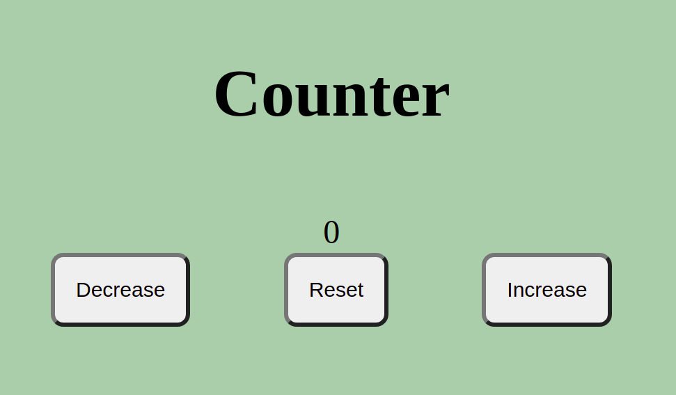

My Portfolio.
Show of my portfolio and current project.
The Willis Resort is one of my projects ordered by
client. Its mainly entail home page, gallery, dining, rooms and
meeting rooms.
Live page

Dairy project has been a great task having to achieve
an objective of being able to calculate monthly daily, weekly, monthly
and even yearly income as well as litres.
Live page

My favourite pet web page is just but a fun and
skills improvement task in my coding life.
Live page

Counter project is all about javascript, its detects when negative value has been achieved and positive value too with constant value zero. Live Page
About Me.

Coding being always my dream, finally being a
developer has just come
through.
Being a developer is worth and enjoyable to coders interested in advancing in
Tech.
Languages equiped with are;
- HTML
- CSS &
- JAVASCRIPT